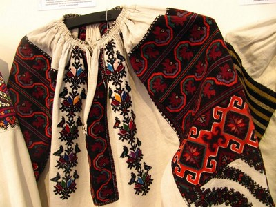
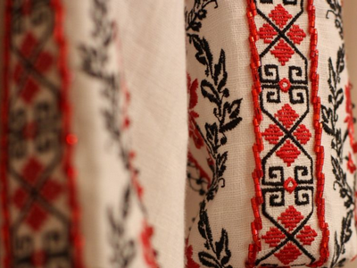
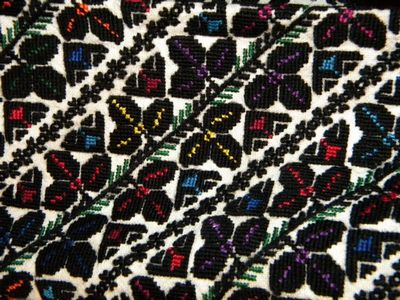
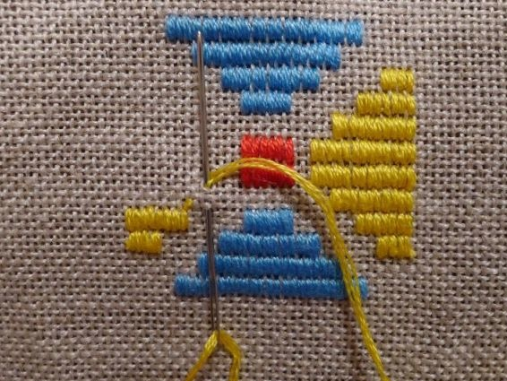

link rel="stylesheet" type="text/css" href="css/default.css" />
Українська вишивка
Історія | Течії | Сьогодення

Яворівська вишивка
Різновид української вишивки, притаманний Яворівському району Львівщини. Характерні кольори: зелений, помаранчевий, жовтий, зрідка чорний.Дізнатися більше

Брокарівська вишивка
Колорит вишивок – переважно сполучення червоного і чорного кольорів, символів смутку і радості.Дізнатися більше

Борщівська вишивка
це сорочка, вишита чорними нитками, яка стала своєрідною візиткою краюДізнатися більше

Майстер класи
Підбірка майстер класів: Українські техніки вишиванняНавчитися новому